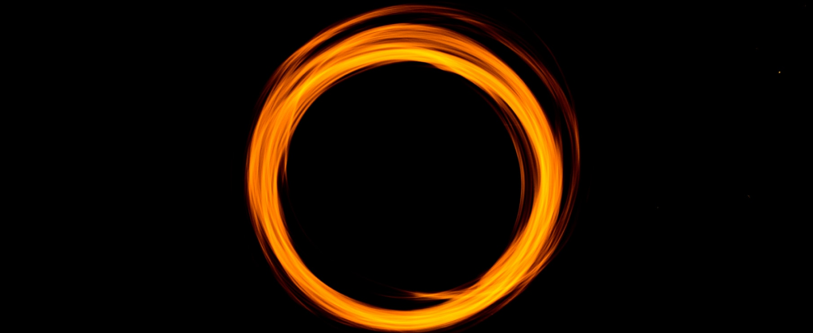
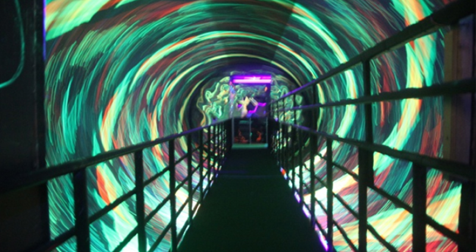

blackhole_main
환상의 블랙홀
우리가 체험할 수 없는 우주공간을 입체적으로 구성해서 실제로 우주 속 블랙홀에 있는듯한 체험을 할 수 있는 공간입니다. 블랙홀은 중력이 너무 커서 심지어 빛조차도 빠져나갈 수 없는 천체를 말한다. 1789년 영국의 존 미첼, 프랑스의 수학자 라폴라스 등이 처음으로 생각해 낸 것으로 오랫동안 이론상으로만 존재해 왔다가 아인슈타인의 일반 상대성이론에 의해 입증되었으며, 인공위성에서 찍은 X선 망원경으로 백조자리에 있는 시그너스 X-1이라는 블랙홀이 발견되면서 존재가 확실해졌다.
출처 : 네이버 지식백과
entertainment
신비한 빛을 뿜어내는 플라즈마 유리구
플라즈마(plasma)볼 표면에 손을 대고 굵은 빛 줄기가 만들어지는 것을 관찰해 보세요!플라즈마볼은 유리구 안에 0.01기압 이하의 낮은 압력으로 비활성 기체(헬륨, 네온, 크립톤, 크세논 등의 혼합기체)를 채워 넣고, 가운데 전극에 높은 전압을 걸어주어 순간적으로 방전현상이 일어나게 하는 기구입니다.
방전현상이란 기체와 같이 전류가 흐르지 않는 물체에 강한 전기장을 걸어주면 전류가 흐르는 현상을 말합니다. 이 때 전압차로 인해 순간적으로 전류가 흘러 스파크가 일어나게 되면 스파크 주위의 공기의 온도가 올라가서 일시적으로 기체가 이온화되는 플라즈마 상태가 됩니다.
전기 에너지에 의해 분리되었던 전자와 이온은 원래의 상태로 돌아오려 하고 이 과정에서 전자는 흡수했던 에너지를 빛의 형태로 방출하게 되는 데 유리구 안의 기체 종류에 따라 다양한 색의 빛을 연출하게 됩니다. 플라즈마 볼의 표면에 손과 같은 전기가 흐를 수 있는 물체를 대면 그 쪽으로 전자가 더 많이 이동하면서 순간적으로 굵은 빛 줄기가 만들어지는 것을 관찰할 수 있습니다.
출처 : 네이버지식백과